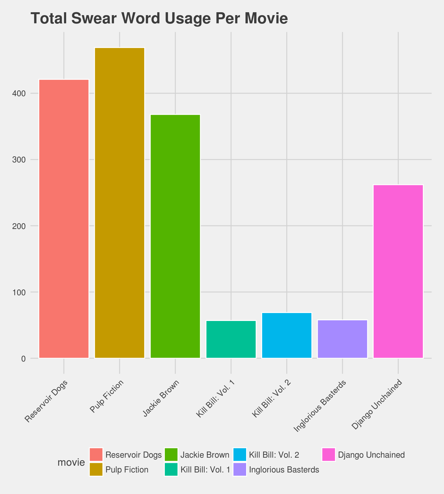
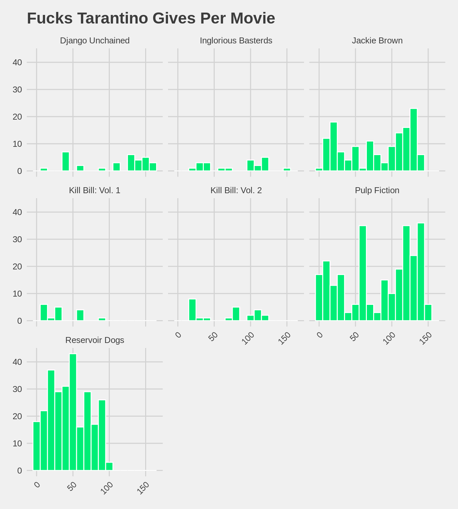
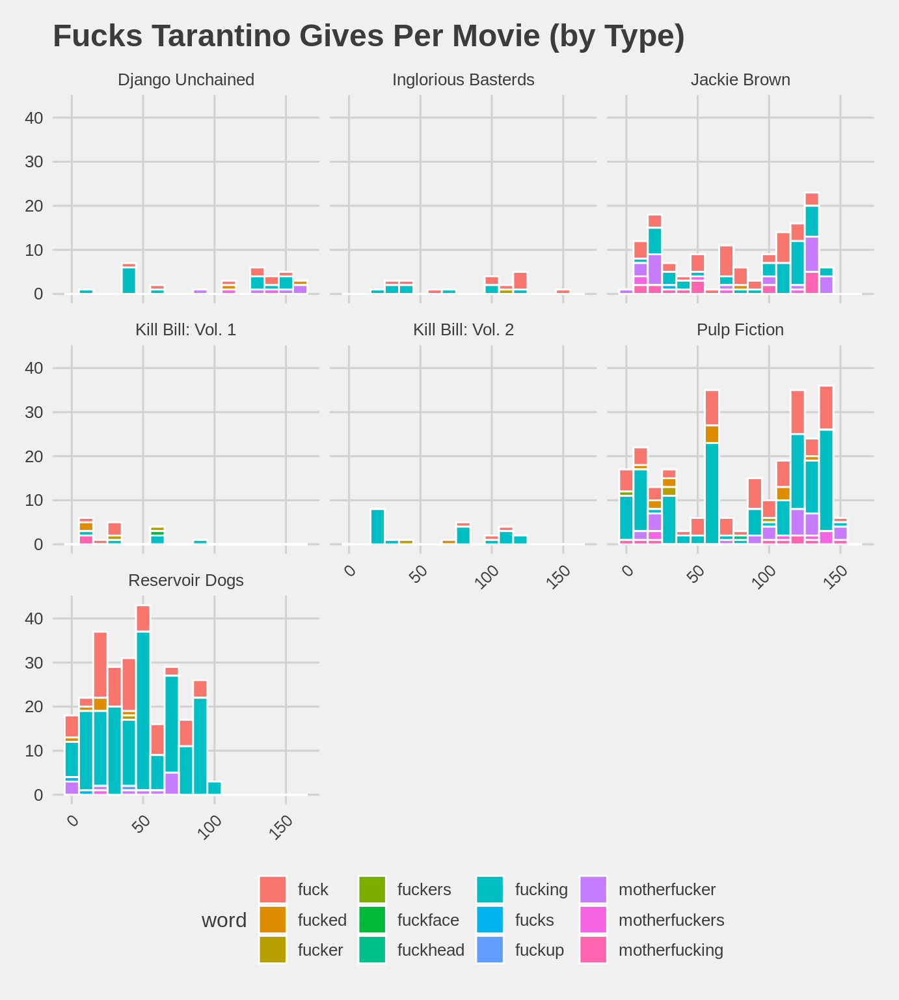

vignettes/tarantino_swears.Rmd
tarantino_swears.RmdThis vignette is based on the data collected for the FiveThirtyEight study A Complete Catalog Of Every Time Someone Cursed Or Bled Out In A Quentin Tarantino Movie, with a focus on the use of swear words in his films.
library(fivethirtyeight)
library(ggplot2)
library(dplyr)
library(stringr)
library(knitr)
library(ggthemes)
# Set default number of digits printed
options(digits = 2)The tarantino dataframe in the fivethirtyeight package presents data relating to the amount of deaths and swear words used in each of the seven movies noted via the movie variable. The profane variable notes whether the instance being examined relates to a swear word or not, and the word variable gives the actual form of the swear word used. Both deaths and instances of swearing are then noted as to when exactly they occur in the movie via the minutes_in variable. This analysis focuses on the usage of swear words in Tarantino’s movies, and does not deal with the number of deaths tallied for his works.
For this analysis, there is first the need to create a new dataframe, which will be called tarantino_year. This new dataframe includes the year of release for each film. Once created, the tarantino_year dataframe needs to be merged with the already existing tarantino dataframe, so the year variable will be present for analysis in the tarantino_plus_year data frame.
# Create new dataframe assigning year of release to movies
movie <- c("Reservoir Dogs", "Pulp Fiction", "Jackie Brown", "Kill Bill: Vol. 1", "Kill Bill: Vol. 2", "Inglorious Basterds", "Django Unchained")
year <- c(1992, 1994, 1997, 2003, 2004, 2009, 2012)
tarantino_year <- tibble(movie, year)
# Combine with existing `tarantino` dataframe
tarantino_plus_year <- inner_join(x = tarantino, y = tarantino_year, by = "movie")The final step in preparing the tarantino_plus_year dataframe for this analysis is to filter out unnecessary information, keeping only entries with the value of TRUE under the profane variable.
Using the altered tarantino_swears dataframe, we can see how many times curse words are used in each of the movies. To better visualize how Tarantino’s usage of swearing has changed over the years, we first ordered the movies by year of release, and then created a graphic with this re-ordered data. A table is provided below, for referencing year of release.
# Ordering the movies by release year
by_year <- c("Reservoir Dogs", "Pulp Fiction", "Jackie Brown", "Kill Bill: Vol. 1", "Kill Bill: Vol. 2",
"Inglorious Basterds", "Django Unchained")
tarantino_factor <- tarantino_swears %>%
mutate(movie = factor(tarantino_swears$movie, levels = by_year))
# Plotting the amount of swear words used in each movie
ggplot(data = tarantino_factor, mapping = aes(x = movie, fill = movie)) +
geom_bar(color = "white") +
theme_fivethirtyeight() +
labs(x = "Movie", y = "Swear Count", title = "Total Swear Word Usage Per Movie") +
theme(axis.text.x = element_text(angle = 45, hjust = 1))
## # A tibble: 7 x 2
## movie year
## <chr> <dbl>
## 1 Reservoir Dogs 1992
## 2 Pulp Fiction 1994
## 3 Jackie Brown 1997
## 4 Kill Bill: Vol. 1 2003
## 5 Kill Bill: Vol. 2 2004
## 6 Inglorious Basterds 2009
## 7 Django Unchained 2012In order to better represent this data available on the profanities used in Tarantino’s movies, it is beneficial to first divide the swear words used into categories via the word variable. For the purposes of this analysis, eight were defined and stored in the swear_category variable:
# Creating the categories
tarantino_swears <- tarantino_swears %>%
mutate(swear_category =
case_when(grepl("ass", word) ~ "ass",
grepl("shit|merde", word) ~ "shit",
grepl("fuck", word) ~ "fuck",
grepl("damn|hell", word) ~ "damnation",
grepl("bastard", word) ~ "bastard",
grepl("dick|cock", word) ~ "dick",
grepl("bitch|cunt|pussy|faggot|slut", word) ~ "gender",
grepl("gook|jap|jew|n-word|negro|slope|wetback|squaw", word) ~ "race"))With these categories defined, we can produce a table called Profanity_Sum showing how often swear words of each category were used during Tarantino’s movies.
Profanity_Sum <- tarantino_swears %>%
group_by(movie) %>%
summarize(Ass = mean(swear_category == "ass") * 100,
Shit = mean(swear_category == "shit") * 100,
Fuck = mean(swear_category == "fuck") * 100,
Dick = mean(swear_category == "dick") * 100,
Damnation = mean(swear_category == "damnation") * 100,
Bastard = mean(swear_category == "bastard") * 100,
Gender = mean(swear_category == "gender") * 100,
Race = mean(swear_category == "race") * 100,
Unspeakable = Gender + Race)
Profanity_Sum## # A tibble: 7 x 10
## movie Ass Shit Fuck Dick Damnation Bastard Gender Race Unspeakable
## <chr> <dbl> <dbl> <dbl> <dbl> <dbl> <dbl> <dbl> <dbl> <dbl>
## 1 Django Unc… 11.1 7.25 12.2 0 19.8 0.382 5.73 43.5 49.2
## 2 Inglorious… 10.3 10.3 36.2 0 27.6 0 5.17 10.3 15.5
## 3 Jackie Bro… 14.4 20.1 38.0 0.272 12.5 0 4.08 10.6 14.7
## 4 Kill Bill:… 5.26 17.5 29.8 3.51 21.1 3.51 19.3 0 19.3
## 5 Kill Bill:… 13.0 14.5 34.8 1.45 11.6 4.35 15.9 4.35 20.3
## 6 Pulp Ficti… 8.10 16.8 56.9 0.426 8.74 0 3.41 5.54 8.96
## 7 Reservoir … 5.70 13.1 64.4 4.04 5.70 1.19 4.28 1.66 5.94This table allows us to conclude the following:
Unspeakable as its category with the highest percentage of swear wordsBastard and Dick categories are used the least often in Tarantino’s moviesYou may notice the Unspeakable variable, which is a combination of the gender and race categories from the earlier code. It is possible to break this variable down relative to each movie, showing how often either category had swear words used.
Unspeakable_Sum <- tarantino_swears %>%
group_by(movie) %>%
summarize(gen_por = mean(swear_category == "gender"),
race_por = mean(swear_category == "race")) %>%
mutate(Gender_Derogatory = gen_por * 100, Race_Derogatory = race_por * 100) %>%
select(-gen_por, -race_por)
Unspeakable_Sum## # A tibble: 7 x 3
## movie Gender_Derogatory Race_Derogatory
## <chr> <dbl> <dbl>
## 1 Django Unchained 5.73 43.5
## 2 Inglorious Basterds 5.17 10.3
## 3 Jackie Brown 4.08 10.6
## 4 Kill Bill: Vol. 1 19.3 0
## 5 Kill Bill: Vol. 2 15.9 4.35
## 6 Pulp Fiction 3.41 5.54
## 7 Reservoir Dogs 4.28 1.66The resulting table allows us to conclude the following:
The observation about Django Unchained having the highest percentage of racially derogatory swear words used compared to not only the other movies analyzed but also in the context of the movie itself may seem unusual, but actually makes sense within the context of the movie. Because the plot takes place in a time where slavery still exists, and the titular character is also a former slave, it is easier to see why this extreme number would be present as an outlier for this particular set of tables.
Based on the above information as a whole, it is possible to see that there is a general trend of less swearing over time in Tarantino’s movies, apart from Django Unchained. This is somewhat unexpected, as swearing has generally become more accepted over time; however, the later rise in swearing for Django Unchained does better reflect this fact. The use of such a large number of racially derogatory swear words in a movie released in 2012 is also of note.
Looking at the dataframe tarantino_swears, the next question we have to ask is ‘How many fucks exactly does Tarantino give in each of his movies?’ First, however, it is necessary to filter for only usages of the word ‘fuck’ and its variations.
At this point, we are able to create a preliminary graph, which details the amount of all fucks given throughout each movie.The following information displays what this amount is, spread out over the time of the movie. We chose to divide the amount of swearing over the course of the movie in this manner because it allows us to examine what parts of each movie include the most swearing.
ggplot(data = tarantino_fuck, mapping = aes(x = minutes_in)) +
geom_histogram(binwidth = 10, color = "white", fill = "springgreen2") + facet_wrap(~movie) +
theme_fivethirtyeight() +
labs(x = "Minutes In", y = "Fucks Given", title = "Fucks Tarantino Gives Per Movie") +
theme(axis.text.x = element_text(angle = 45, hjust = 1))
This can be further broken down to show what types of fucks Tarantino gives.
ggplot(data = tarantino_fuck, mapping = aes(x = minutes_in, fill = word)) +
geom_histogram(binwidth = 10, color = "white") + facet_wrap(~movie) +
theme_fivethirtyeight() +
labs(x = "Minutes In", y = "Fucks Given", title = "Fucks Tarantino Gives Per Movie (by Type)") +
theme(axis.text.x = element_text(angle = 45, hjust = 1))
From this information, it is possible to see that in terms of fucks given:
The spike in ‘fuck’-related swearing about halfway through Reservoir Dogs coincides with rising action of the plot nearing what would be the climax, and as such is an understandable increases. Pulp Fiction also follows this, with the ‘fuck’-related swearing more heavily weighted toward the end of the movie, around the time where the plot’s climax would be taking place. Overall, the above plots show that ‘fuck’ has a number of variations which are used with varying frequency.
With the above data analyzed, we can see that Quentin Tarantino has used a large number of swear words throughout his career, arguably to great effect in some cases. Although the general trend seems to be a decline in the amount of swearing present in his movies over time, his 2012 movie Django Unchained broke free of that trend and also used a staggeringly large number of racially derogatory swear words. Other than this statistical outlier, it’s easy to notice that the word ‘fuck’ and its different variations is by far the most commonly used category of swear words in most of Tarantino’s movies. A very versatile word, ‘fuck’ can be used in a variety of ways, and it would not be much of a stretch, based on this data, to say that Tarantino has capitalized on its different uses throughout his career.
Sociologically, it is interesting to analyze the different patterns of swear word usage over time, particularly with the gender and racially derogatory categories of swear words. For the most part, Tarantino does not use many gender derogatory swear words for all of his movies apart from Kill Bill: Vol. 1 and Kill Bill: Vol. 2, gender derogatory swear words amounted to less than ten percent of the total swear words used for each movie. The two outliers, however, showed gender derogatory terms being used nearly twenty and sixteen percent of the time, respectively. Even racially derogatory swear words accounted for about ten percent or less of the swear words used in Tarantino’s movies, apart from Django Unchained. Furthermore, viewing the word ‘fuck’ and its variations as a very versatile method of swearing is interesting to consider, though it’s worth noting that even that amount has declined over the course of Tarantino’s career.
At the end of the day, it can be said with a fair amount of confidence that Tarantino did, indeed, give quite a few fucks.